Skinning in Maya
Today we are going to be skinning a leg. Before getting started, download the leg rig to the scenes directory in your current Maya project.
What is skinning?
There are two ways to bind geometry to a rig.
Constraints allow you to connect separate pieces of geometry to individual joint(s) in a rig. This is good for robots, mannequins, machines, or things that are made up of different moving parts. Your geometry itself will not bend or change shape. Think of your geometry as pieces of wood joined by hinges.
Skinning allows you to connect one large piece of geometry to a skeleton and designate how much influence each joint has over each vertex in that mesh. Think of your geometry like a rubber outer "skin" that follows the movement of the joints. This is good for organic models like people and animals. The joints "influence" or put "weight" onto a vertex and vertices and by altering the values, you can create naturalistic organic deformations.
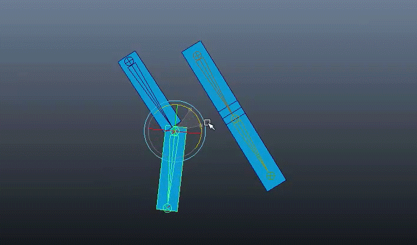
Influence on a vertex is designated on a scale of 0-1 for every joint. 0 means that that vertex will not follow the joint at all, 1 means that the vertex will follow the joint completely. So if there are two joints in a skeleton, and a vertex is receiving 0.6 influence from joint 1, then that vertex must also be receiving 0.4 influence from joint two. The process of skinning is assigning or "painting" influence values onto sections of geometry.
Before You Start
Double check that a skeleton is in the proper place. Properly placed joints are important to make sure your character (if you are skinning something, it will likely be an organic character) moves realistically. Two common mistakes:
1. Shoulder joint isn't placed far out enough. Feel your shoulder joint as you move your arm up and down. See how the joint is located pretty much straight up from your elbow? If you put it where your collarbone is, your characters shoulders will cave in.
2. Not enough vertexes. Because skinning depends on influencing vertices, not having enough vertices means you have less control over how the mesh deforms with movement. Be sure you have at least three edge loops around wherever you have a joint (elbows, wrists, knees, hips.) Spines are less worrisome when it comes to edge loops because you don't bend the waist the same way you bend at your knee or elbow, so you probably just need one loop.
3. Be sure to name everything. It's very easy to lose track of your skin weights because Maya will automatically set combinations of weights to equal one. You will have a very unpleasant time if you don't name everything.
4. Freeze transform and delete history on your mesh. You CANNOT do this later, because it will ruin your skinning.
Initial Skinning
First, we'll let Maya try to skin the geometry. It will estimate the skin weights based on the distance between the joint and the skin. Select the Root joint of your skeleton, and select the geometry. Go to Skin --> Bind Skin --> Smooth Bind. Set the options to the following.
Then select Bind Skin.
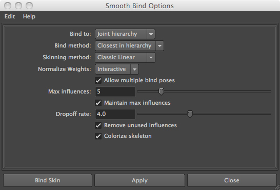
The skeleton should show up as different colors--this indicates the skeleton is bound. (Maya isn't very good about indicating this, if you delete the skin bind the color will frequently stay there regardless...this isn't really an issue, just a matter of display!) Select the mesh and look in the channel box: one of the inputs should be skinCluster1. This indicates that the skeleton is now bound to the mesh. IF YOU DELETE HISTORY AT THIS STEP, IT WILL DELETE YOUR SKIN CLUSTER, AS WELL AS ALL THE WORK YOU'VE DONE SKINNING. So don't do that!
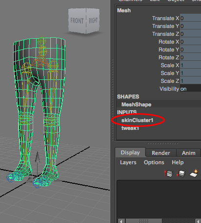
Move the legs around with the controls. See how weird this looks?
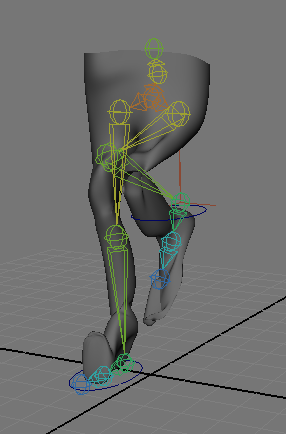
Moving the left leg skeleton pulls at the skin on the right leg, and vice versa. So now, we'll start painting skin weights correctly to fix this.
Painting Skin Weights
Make sure your shelf category is on animation. Select your skinned geometry and go to Skin → Edit Smooth Skin → Paint Skin Weights Tool → Option Box
Check out the tools in the option box. Make sure "Normalize Weights" is set to Interactive. This designates the way Maya calculates the influence of each joint on a vertex as a percentage of the total influence on that vertex, also known as "normalizing" the weights. (don't worry about this, you'll never really need to change this option.) Make sure you have the other options set correctly, as shown below.
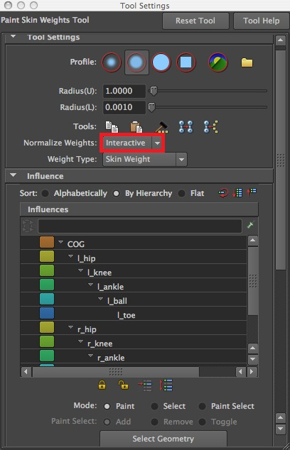
Look at your model. It should have different shades of gray on it. This indicates how much influence that vertex has from the selected joint. Black means 0, or no influence, white means 1 or full influence, Scroll down to Gradient and check the option to "Use Color Ramp." This is easier way of displaying the weights: Black is still 0, white is still 1, but you get a rainbow range for in between that is easier to look at then a range of grays.
You have options to change the shape and softness of the brush, and different ways you can paint weights: Replace, Add, Scale, and Smooth.
You can see all your joints in the box in the toolbox under the label "influences." Think of all your joints as sources of influence that put "weight" on the vertices. Start by locking all the joints in the list. Select the first joint, then shift-select the last joint, and click the little yellow lock icon at the bottom. Locking a joint prevents you from adding or removing weight values from the joint. Because adding influence from one joint means subtracting influence from another joint, make sure that you only have two joints unlocked at any moment. Otherwise you might end up with one vertex with 0.1 influence from ten joints. This gets very confusing.
There are four methods to paint weights:
Replace
When in the "Replace" mode, any weight you paint will be the weight that is specified by Value. It takes the influence from other unlocked joints. This is why it's important to only unlock 2 joints at a time. So if you paint with a value of 0.4, the other unlocked joint will receive a value of 0.6.
Add
When in the "Add" mode, any weight you paint will be added to the current influence. Any amount added will be subtracted from the other unlocked joints.
Scale
When in the "Scale" mode, the current weight will be multiplied by the Value. So setting Value=1 will have no effect, Value=0 will replace the influence with 0, and Value=0.5 will divide the weight by two, so 0.8 will become 0.4 and .6 will become .3, etc, etc. Very useful for when we want smooth connections between 2 joints and another joint, as well as between those two joints.
Smooth
When in the "Smooth" mode, the weights across several vertices will be smoothed out, as well as the unlocked joints. This is very useful!
Flood
The "Flood" button basically applies whatever settings you have set to the all vertices. It will only affect the unlocked joints. So if you want to move all the influences from joint 1 to joint 2, you would unlock only those two joints, and with joint 1 selected, with operation set to Replace and Value set to 0, and then click "Flood". Now all influences from joint 1 are transferred to joint 2.
Block Skinning
This method basically erases all of the weights assigned by automatic skinning, and relocates all the influence so your entire mesh is only affected by one joint (usually the root). Then, you remove weights from the root onto each joint, one by one. This is the easiest way to skin something because its easy to keep track of where you are subtracting all of your weights from, as you add weights to joints.
REMOVE EXISTING WEIGHTS
1. On the legs, unlock Root and LHip.
2. On LHip, set the paint mode to Replace, the value to 0, and the brush opacity to 1. Click flood. LHip is now has no influence on the mesh whatsoever.
3. Click back to root. It should appear as if Root has all the influence that LHip used to have.
4. Lock LHip again. Keep Root unlocked.
5. Unlock LKnee. Keep the same paint mode, click flood again. Now LKnee has no influence on the mesh either. Click back to root. It should look like the Root has also gained those weights. Now lock LKnee again.
6. Repeat with all the joints, unlocking, flooding, and locking them again.
7. Once you're done, select Root. The entire mesh should be white. The root joint has all the influence over the entire mesh. If you move the leg controllers, the leg geometry will not move with the skeleton, because those joints are not affecting the geometry at all.
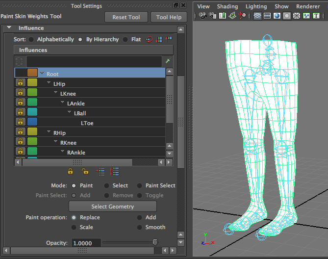
PAINT NEW WEIGHTS
8. Now unlock LHip again. Set the paint mode to Replace and the value to 1. Paint the upper leg white (doesn't have to be perfect). Lock it again afterwards. Click Root. See how what you just painted on LHip is now black?
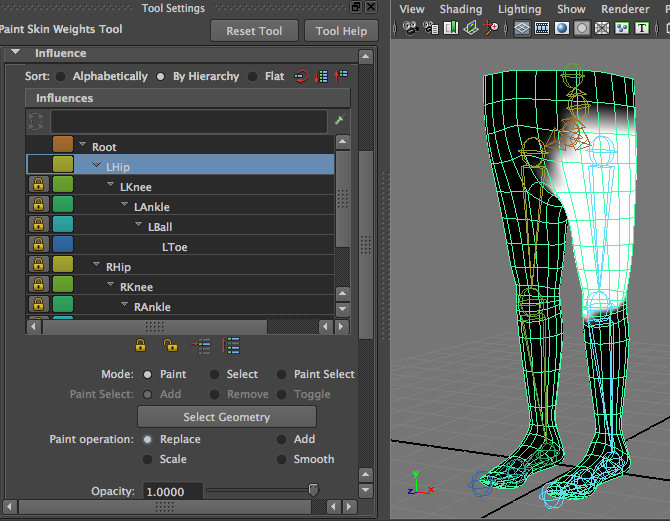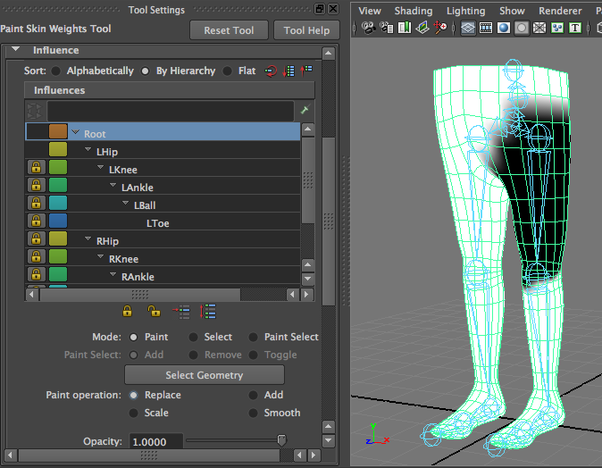
9. Repeat with LKnee, LAnkle, LBall, LToe, the way they are in the pictures. Be sure to keep ONLY the joint you are skinning and the Root joint unlocked at any given time.
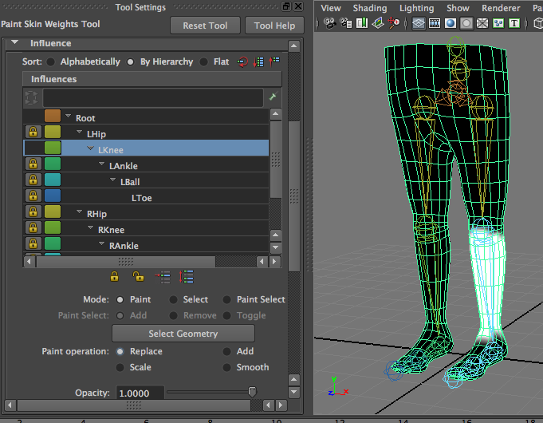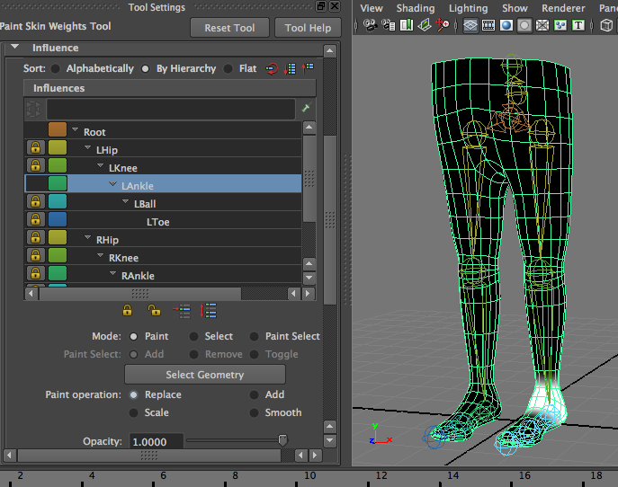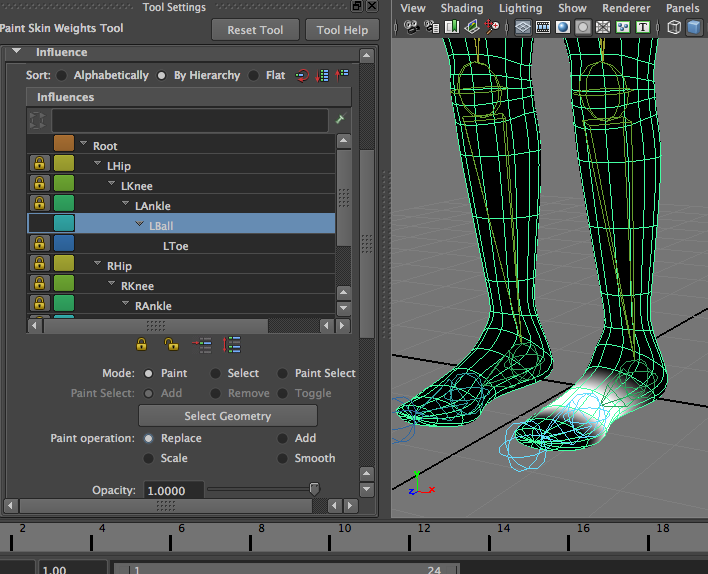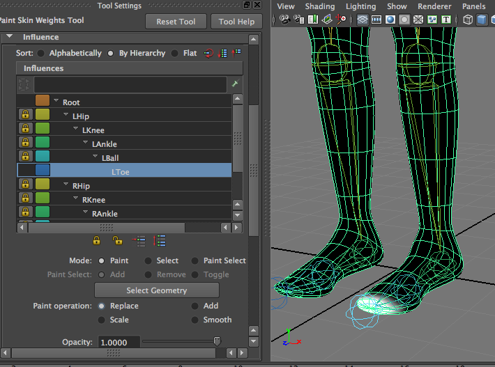
10. After you are done with the left leg, click on the Root Joint to make sure you haven't missed any spots. There should be no white spots anywhere on the left leg on the Root Joint. If there is, that means the Root still has influence on that vertex, and it will make your leg move weirdly. Unlock the joint that should be influencing that vertex, and fix that spot.
11. Select the skin and go to Skin --> Edit Smooth Skin --> Mirror Skin Weights --> Option Box, and make sure you have the correct settings (most likely, your model is symmetrical across the YZ axis, and you painted the left side, so you mirror positive to negative). Click MIrror.
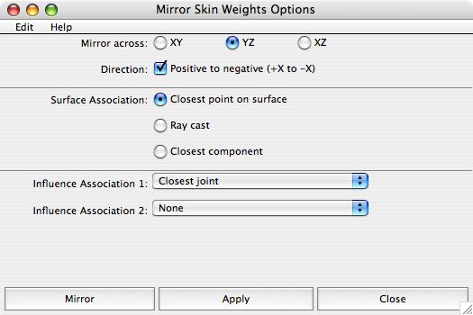
12. Go back to the paint skin weights tool and scroll through all the joints in the tool box. You'll see that mirror weights put all the weights on the left side on the right side as well. Move your controllers around. The leg meshes should move independently now. But, you'll notice that move the leg too high, and the knee will intersect with itself. This is because we have very rough, block skins. We need to smooth out the weights.
Refined Skinning
13. Go to the Paint Skin Weights Tool. Unlock the Root and the LHip. Click on either joint. Using the Smooth paint mode, paint over the edges of the white area. This creates some falloff in your weight values, so that mesh that is very close to the Root joint has an weight of 1, but mesh farther away from the root joint might have an influence of 0.5. It doesn't matter what joint you click on, because the smooth values will occur in the same place on the other joint as well. If you paint a vertex that is between the Root and Lhip to have 0.5 influence from the Root, it will also have 0.5 influence from the hip.
14. Do this for the entire left leg, unlocking only two joints every time and smooth the area between them.
15. Mirror your weights again to move them to the other side.
16. Tadaa! You have a pair of skinned legs that move realistically! Play with and tweak the skinning in places that might still intersect. You can use skinning to mimic the way the back of your knee deforms when you bend it.
Random Pro-Tips
- Unlocking all your joints, and flooding the Root with 1 is a quick way of zeroing out everything else. Just be sure you lock everything back up after.
- Sometimes Maya is stupid and won't let you paint something to zero, even when you have only two joints unlocked. After skinning a joint its a good idea to go back to it and make sure the weights were actually successfully painted on. If a joint won't let you paint out its influences, go to your other unlocked joint and paint on a value of 1. It will make the other one 0.
- I actually rarely use block skinning. I usually use Maya's Smooth Bind, and remove the incorrect weights by unlocking the correct joints. However, if you don't keep track of which joints you have unlocked, Maya will randomly displace your weights onto multiple joints and you'll have a terrible time trying to figure out where all your influences are. I ALWAYS block skin finger joints, because I can't keep track of twenty joints on each hand.
- If you need to adjust your mesh or joints after you've skinned, first, save your file and duplicate it. In the copy, go to Skin-->Detach Skin-->Option Box. Select Keep History from the Drop Down menu, and click Detach. Do NOT delete your history...it will delete all your skin weights! Duplicating the file first is a good idea because 9 out of 10 times this method will work....but you don't want to risk that one time it doesn't and you have to reskin everything. With the mesh detached, you can adjust joints, and geometry, but if you add new joints or vertices you will have to tweak the skin when you reattach it. If you already have your UV maps completed, you can export your skin weights as image files, and import them again later. This method ensures that you will not lose your skin weights, but you will have to UV map your models first.
Good luck!